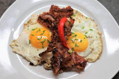

Cardápio do Iron Door Saloon
É claro, que como o saloon é na California, que o menu será em dollar, aqui estão alguns do vasto cardápio deles:
2 Egg Breakfast2 Eggs served with your choice of bacon or sausage and your choice of hashbrowns, homefries or fruit and served with choice of wheat, white, or sourdough toast. $12.95 
|
Breakfast BurritoGiant breakfast burrito stuffed with scrambled eggs, hashbrowns, cheddar cheese, sausage and bacon. Served with a side of salsa and sour cream. $15.50 
|
Black Bart Breakfast2 Pancakes, 2 Eggs any style with bacon and sausage, and your choice of hashbrowns or homefries and choice of toast. $17.95  |
Mozzerella SticksCrispy fried mozzarella sticks (6) served with marinara sauce, one of the best seller. $9.50 
|
Sweet Potato FriesCrispy sweet potato fries tossed with cumin and fry salt and served with ranch dressing. $8.95 
|
Jalapeno PoppersJalapeno poppers (6) stuffed with cream cheese, battered and fried and served with a side of ranch dressing. $12.75 
|
French friesBattered crispy French fries, seasoned with our fry salt with ketchup, this combination is delicious. $8 
|
Buffalo wingsOne dozen fried chicken wings covered in Frank's Red Hot sauce and served with your choice of ranch or bleu cheese dressing. $19.95 
|
Garlic FriesCrispy battered french fries tossed with garlic butter and parmesan cheese. Add ranch $1 $11.95 
|